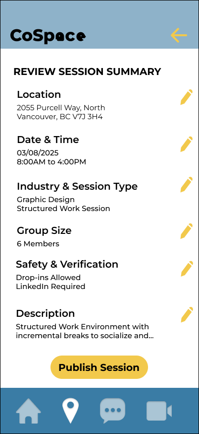
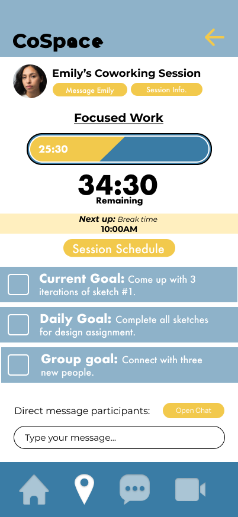

Work independently. Feel connected.
Find your focus.
Find your people.


Find a place
to work together.
Browse sessions around North Vancouver and review the context before joining.
Bring a little company
to your focus time.
A shared timer and visible participants keep the room centred on working alongside others.
A closer look
The details of working together.

